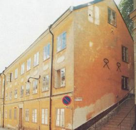
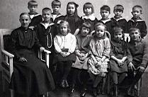

Södermalm i tid och rum. Stockholm

Bastugatan 3. Hörndelen uppfördes i två etapper på 1780- och 1790-talen. Tillbyggt österut och höjt en våning 1866. Senast ombyggd 1972. Maria Trappgränd till höger.

Skolkort från Bastugatan 3. 1923-24. Lärarinnan Sandström. I översta raden, tredje från vänster står Aina Andrén.